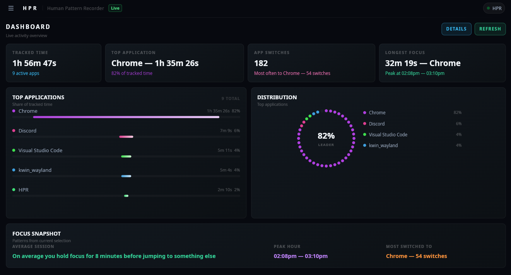

Know where
your time actually went.
A compiled C++23 binary that watches your active window, every 50ms, all day. One string. Written locally. No accounts. No telemetry. 100% offline core.

Three things, live, all day.
You open your computer. You work. Hours pass. You have no idea where they went. HPR fixes that.
Current Focus
What you are in right now, updating in real time. Every window switch detected in 50ms.
Time Per App
Total time per application today, displayed as 2h 14m 30s. Accurate to the second.
Switch History
Every transition, timestamped, in order. See exactly when you moved between applications.
VS Code Project Tracking
Tracks which VS Code project you're in — not just that VS Code is open. No extension. No plugin. No marketplace. HPR reads the window title.
Edit the entire UI at runtime.
HPR's interpreted mode loads .slint files from disk at runtime instead of compiled-in UI.
Change colors, layouts, animations, and component structure — without recompiling. This is not a theme system.
It is a full UI runtime.
How it works
Enable interpreted mode
Set use-interpreter,true in config.csv. One line.
Edit app-window.slint
Modify colors, layouts, animations, add components. Full Slint language access.
Restart HPR
Your custom UI loads from disk. No build step. No compilation. Instant.
// Enable runtime UI loading use-interpreter,true hardware-acceleration,true
// Linux ~/.config/HPR/ui/app-window.slint // Windows %APPDATA%\HPR\HPR_Config\ui\app-window.slint
Do not rename structs, properties, or callbacks. HPR's C++ backend references these by exact name to push data into the UI.
A reference copy is always available in ui-REFERENCEONLY/ for diffing.
Dynamic, Sandboxed Lua Extensions.
Build dynamic widgets, advanced database views, custom logging handlers, and integrations using a secure, isolated Lua 5.4 scripting VM. Fully integrated with C++ handles, real-time EventHub messaging, and SQLite.
Extension Highlights
Interactive UI Callbacks
Register handlers using registerUiCallback_E. Pass nested structures (arrays, objects) dynamically from Slint UI triggers directly to Lua VM handlers as arguments (with a void return in C++).
C++ RAII Auto-Disconnection
EventHub subscriptions are bound to C++ connection tracking handles. They disconnect automatically when extensions are reloaded or unloaded.
Safe SQLite Queries
Interrogate tracking database records and perform calculations directly in sandboxed scripts safely in real-time.
-- Subscribe to EventHub securely HPR.connect_E("TICK", function(data) -- Direct database query local res = HPR.dbQuery_E("SELECT count(*) FROM active") print("Active tracking entries: " .. res[1][1]) end)
// Linux config path ~/.config/HPR/extensions/my_widget.lua // Hot Reloading // Save your script and HPR reloads it on-the-fly!
Exactly one thing. Nothing more.
HPR reads the title of the currently focused window. That's it. One string, every 50ms, written locally.
Compiled C++23 binary. Starts in milliseconds. Under 13MB of RAM on Windows. No Python runtime. No embedded web server. No subscription.
No accounts. No telemetry. No analytics. 100% offline core. // HPR *does* have networking code inside the binary, // but no core HPR utility uses it AT ALL. // the networking code is solely for lua extension API
See HPR running.
Live window tracking, switch history, and the Insights engine — all running locally, zero accounts.
Home — Time Per App & Switch History

Insights — Pattern Analysis Engine
Live Demo — Window Tracking & Insights
Multi-threaded C++23.
12-14 threads active, out of which 4-7 are slint ui.
The stack.
C++23
Modern C++ with std::chrono, std::mutex, std::variant. Compiled binary, not interpreted.
Slint 1.16.1
Declarative UI toolkit. Compiled or interpreted mode. No Electron. No web runtime.
SQLite3
Official single-file amalgamation compiled into the binary. Zero external database dependencies. WAL mode with passive checkpoints.
Open source. Free forever.
The premium version has been merged into free. Every feature — current and future — available to everyone at no cost.